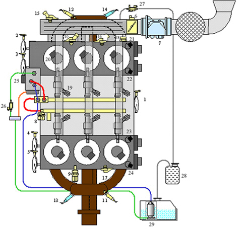
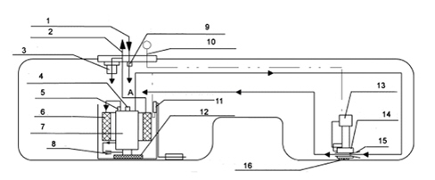
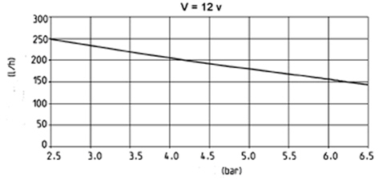
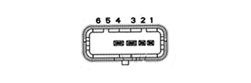

INTRODUCTION - FUEL TANK AND PIPES
- Path
- Descriptions > 10 ENGINE > 1040 FUEL TANK AND PIPES > INTRODUCTION - FUEL TANK AND PIPES
- Kind
- system description
- Applies to
- engines: 3.2 JTS; all production periods
- Interactive page
- https://sloeber94.github.io/elrnDB-aBrrSpdr/en/#/946001178
Applies to: engines: 3.2 JTS; all production periods
Fuel system diagram

1. Rpm and TDC sensor
2. Left cylinder head exhaust camshaft timing sensor
3. Left cylinder head inlet camshaft timing sensor
4. Right cylinder head inlet camshaft timing sensor
5. Right cylinder head exhaust camshaft timing sensor
6. Throttle body
7. Flow meter (with intake air temperature sensor)
8. Fuel pressure sensor
9. Oil level and temperature sensor
10. Water temperature sensor
11. Right bank upstream Lambda sensor (pre-catalyzer)
12. Left bank upstream Lambda sensor (pre-catalyzer)
13. Right bank downstream Lambda sensor (post-catalyzer)
14. Left bank downstream Lambda sensor (post-catalyzer)
15. Absolute pressure sensor
16. Left bank detonation sensor
17. Right bank detonation sensor
18. Oil pressure sensor
19. Injectors
20. Coils
21. Left cylinder head exhaust camshaft phase transformer solenoid
22. Left cylinder head inlet camshaft phase transformer solenoid
23. Right cylinder head inlet camshaft phase transformer solenoid
24. Right cylinder head exhaust camshaft phase transformer solenoid
25. Flow regulator
26. Shut-off solenoid
27. Canister solenoid valve
28. Canister
29. Low pressure pump in tank
The fuel is taken from the tank by the low pressure electric pump and sent to the high pressure pump at a pressure of 6 bar regulated by a valve inside the pump; having reached the high pressure pump the pressure of the fuel increases to a maximum of 120 bar and it is sent to the left bank rail (red pipe in the drawing) from where, thanks to a connecting pipe between the two rails, it also reaches the right bank rail and with the injectors connected to the two rails and controlled by the engine management system the fuel is injected directly into the cylinders.
Before reaching the high pressure pump, the low pressure pipe that supplies the high pressure pump (shown in the drawing in blue), is connected by means of an eyelet drilled internally to the left rail to the duct that connects the rail to the low pressure pipe normally closed by the maximum pressure mechanical valve, calibated at 120 bar, located on the actual rail; when the pressure reaches the maximum permitted value, the maximum pressure valve opens and places the (high pressure) rail in contact with the (low pressure) supply pump thereby limiting the maximum pressure.
At the pump intake the fuel flows through a chamber that contains a damper which has the task of preventing the flow at the pump inlet from pulsating in order to guarantee the optimum supply for the high pressure pump; when it is working the damper produces fuel vapours that must be collected and there is a vapour recovery pipe for this purpose (shown in orange in the drawing) that has a return pipe connected to the high pressure pump damper chamber.
There is a fuel return pipe (shown in green in the drawing) from the high pressure pump taking the excess fuel to the tank; there is a shut-off solenoid valve on this pipe that is kept open by the control unit when the engine is running, whilst when the engine is switched off of the ignition is off the solenoid remains closed; all of this facilitates starting the engine preventing the high pressure pump from draining.
Low pressure fuel supply system
Hpi 4.6 electric pump assembly with level gauge and additional draught.

The special shape of the tank with two compartments necessary to allow the propeller shaft connected to the rear differential to reach the centre of the tank means that a special fuel draught system is required to convey the fuel from the compartment in the tank where the fuel pump is not housed in addition to a special fuel level gauge system.
A traditional type electric pump submerged in the tank is used with the fuel level sensor and float connected an an additional intake assembly located in the compartment of the tank where the pump is not submerged; the two compartments are in practice located on either side of the propeller shaft; the additional assembly has a second fuel level gauge sensor and float; the main pump and the additional assembly are connected by two pipes (one with a smaller section and one with a larger section) and by electrical wiring submerged in the tank with the connector on the electric pump also submerged.
Fuel draught

1. Return line
2. Supply line
3. Pressure regulator
4. Pressure relief valve
5. single-acting valve
6. Filter
8. Jet pump
9. Single-acting valve
10. Electrical output signal
11. Fuel level sensor attachment
12. Pump filter (60 micron)
13. Additional fuel level sensor attachment
14. Support in tank
15. Jet pump with filter
16. Additional filter (2000 micron)
To allow the intake of fuel from the additional compartment, a quantity of fuel is taken from the pump supply (A) which passes through the small section connecting pipe between the pump and the additional assembly and supplies the additional assembly jet pump (15) where, thanks to a Venturi pipe, the vacuum needed to allow the flow of fuel from the additional compartment to the main compartment housing the electric pump is created; in this way the gradual draining takes place firstly of the top part of the (shared) tank and later on of the additional compartment; obviously the compartment housing the electric pump will be drained last with the consumption of all the available fuel.
Fuel level reading
As already mentioned, two fuel level sensors with floats connected, one to the electric pump in the main compartment and one to the additional assembly (in the additional compartment) are used to give a correct fuel level reading; the two level sensors are connected in series and there is therefore a single connection that supplies the output fuel level reading; both sensors have a resistance that varies according to the position of the float and the series of the two constitutes the reading taken as a reference for the fuel level reading.
The float in the additional assembly is capable of travelling the entire height of the tank (from empty to full) whilst the float on the electric pump travles to about halfway up the tank.
Flow rate specifications

The above graph shows the pump outlet flow rate (l/h) dependent on the output pressure (bar) at a constant supply voltage of 12 V.
The flow rate for the pump working point is 125 l/h at a pressure of about 6.2 bar and a voltage of 12 volt.
Electrical connections

DESCRIPTION | Pin component connector |
|---|---|
Fuel level sensors supply | 1 |
Fuel level sensors earth | 2 |
Electric fuel pump earth | 3 |
Electric fuel pump supply | 4 |
Free | 5 |
Free | 6 |